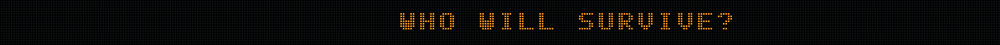

Same pixel scale, livelier stadium sign
Native portrait pixels

Directly exported game textures at 1:1: Nico is 128 × 128; each commentator is 192 × 128. Their native pixels use the same display scale and nearest filtering. Face size and framing differ. The earlier animation gallery enlarged the portraits three times for review.
Scroll → stop → three flashes → resume → burst

Captured from the game shader at ten frames per second. All lamps stay in place. The ordinary palette is orange and blue; red remains reserved for rare match results.
The new interest, encouragement and rink-facing opponent animations are deferred. Existing victory/defeat animations remain integrated.